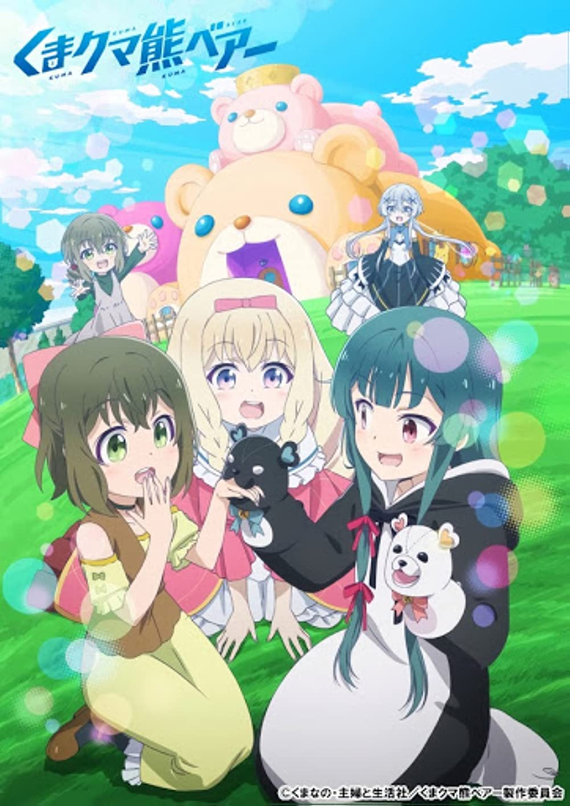

Kuma Kuma Kuma Bear

Ditulis oleh : Kumanano
Release : pada 29 Mei 2015
Genre : Action, Adventure, Comedy, Fantasy, Slice of Life
BAB 1
Bab 1 Peralatan Bear-san getto da ze!
Pembaruan yang ditunggu-tunggu telah tiba
RPG VRMMO fantasi pertama di dunia.
Banyak balapan, berbagai profesi, banyak keterampilan, permainan dengan beragam gaya permainan.
Setelah berada di pasar selama setahun, pembaruan besar akan datang hari ini.
Sudah tiga tahun sejak penarikan sosial saya, saya berusia 15 tahun sekarang.
Saya menemukan permainan ini setahun yang lalu. Ini disebut World Fantasy Online.
Gim fantasi dengan rasa realitas.
Saya mulai bermain setahun yang lalu. Ini adalah kehidupan game tanpa sekolah.
Tidur? Saya tidur dengan benar selama 8 jam sehari.
Saya juga mengantuk.
Pertama adalah tidur, kedua adalah makanan lezat, ketiga adalah game.
Sekolah?
Seperti saya akan pergi ke tempat yang bodoh.
Saya memiliki stok alkimia di dunia ini.
Saya hanya menyetor uang dan itu terus meningkat.
Gim yang sederhana.
Jika Anda menjual informasi, uang semakin meningkat.
Orang tua saya mengatakan bahwa sekolah adalah tempat untuk berteman.
Apakah teman-teman enak?
Orang tua terlalu berisik, tetapi setelah menyerahkan mereka 100 juta yen, mereka terdiam.
Mereka tidak pulang lagi.
Saya yakin mereka bermain-main dengan uang saya.
Ketika mereka kehabisan, mereka mungkin akan kembali untuk lebih. br
Jadi saya memutuskan untuk pindah ke apartemen mewah secara rahasia.
Ini perpisahan untuk orang tua saya.
Umurku 15 tahun, aku dapat uang, aku juga bisa memasak. Tidak ada masalah bahkan jika saya hidup sendiri.
Iklan
Saya bisa mencuci pakaian jadi jadi tidak apa-apa.
Hari ini saya akan memulai permainan dengan pembaruan ini untuk pertama kalinya.
Pemeliharaan selesai.
Pemeliharaan telah selesai tanpa penundaan, saya langsung memasuki game.
「Selamat datang kembali, Yuna-sama. Apakah Anda ingin saya memberi tahu Anda tentang pembaruan baru? 」
Saat saya memasuki permainan, seorang wanita dengan pakaian pelayan membimbing saya.
Saat Anda memulai permainan untuk pertama kalinya, Anda dapat memilih pria atau wanita sebagai panduan Anda.
Saya memilih pelayan imut tanpa ragu-ragu.
Butler baik, tapi aku lebih suka pelayan.
「Tidak perlu. Mulai sesegera mungkin tolong 」
「 Dipahami. Mari kita mulai dengan kampanye pembaruan lalu 」
「 Ada hal seperti itu? 」
「 Ada item saat ini untuk pemain dengan tahun gameplay 」
「 Benarkah! 」
Jika ini waktu bermain, saya tidak akan kalah dari siapa pun.
Saya bukan hikikomori untuk sebuah pertunjukan.
「Lalu, silakan pilih item favorit Anda dari kotak ini」
Ketika pelayan mengatakan demikian, banyak peti harta karun telah muncul.
Sejauh yang saya lihat, peti harta karun, peti harta karun, peti harta karun. Ada banyak peti.
「Pilih dari semua ini?」
「Ya, silakan pilih favorit Anda」
Dia berkata untuk memilih, tetapi jumlah peti ini …
Ruangan tanpa akhir dengan peti harta yang tak terbatas.
Khawatir tidak akan menyelesaikan masalah, jadi saya memutuskan untuk hanya memilih peti di bawah kaki pelayan.
Semua peti harta karun lainnya menghilang ketika aku mengambil satu peti di tanganku.
Sepertinya saya tidak dapat memilih kembali.
Saat aku membuka peti harta karun …
「Apa-apaan ini ー ー ー ー ー ー ー ー ー」
Nama barang: Set beruang
Tangan kanan Sarung tangan beruang hitam (tidak dapat dipindahtangankan)
Tangan kiri Sarung tangan beruang putih (Tidak dapat dipindahtangankan)
Kaki kanan Sepatu beruang hitam (Tidak dapat dipindahtangankan)
Kaki kiri Sepatu beruang putih (Tidak dapat dipindahtangankan)
Gaun beruang hitam dan putih (Fitur terbalik, warna berbeda di depan dan belakang. Tidak dapat dipindahtangankan)
Saya ingin memakainya tetapi berhenti karena tampilannya yang konyol.
Saya tidak bisa memakai ini bahkan di dalam game.
Meskipun aku seorang hikikomori tanpa teman, aku tidak bisa memakai sesuatu yang memalukan.
Bahkan transfer tidak mungkin, saya hanya bisa memasukkannya ke kotak item ke rott.
Bagaimanapun, mari kita konfirmasi efeknya untuk berjaga-jaga.
Sarung tangan beruang hitam Sarung
tangan Serangan, serangan meningkat saat level meningkat.
Sarung tangan beruang putih Sarung
tangan Pertahanan, pertahanan meningkat seiring dengan meningkatnya level.
Sepatu beruang hitam, Sepatu beruang putih
Meningkatkan kecepatan tergantung pada level pengguna.
Pengguna tidak akan lelah setelah berjalan untuk waktu yang lama.
Gaun Beruang Hitam (Depan)
Meningkatkan ketahanan fisik dan sihir tergantung pada level pengguna.
Tahan panas. Tahan dingin.
Gaun Beruang Putih (Kembali)
Stamina otomatis dan regenerasi mana saat dikenakan.
Jumlah pemulihan tergantung pada tingkat pengguna.
Tahan panas. Tahan dingin.
Apa kekuatan cheat ini, saya akan menjadi tak terkalahkan jika dikenakan pada level saya.
Tapi aku tidak punya keberanian untuk melengkapi kostum ini.
Tapi kekuatannya akan sia-sia.
「U ~ n」
Jika saya menahan rasa malu saya akan mendapatkan kekuatan, saya bermasalah.
「Yuna-sama, apakah ada yang salah?」
「Bukan apa-apa」
Yah, saya tidak akan melengkapinya saat ini, mari kita pikirkan nanti.
「Silakan mulai permainan」
「Maafkan aku, masih ada survei」
has Sungguh merepotkan 」
「 Maaf, ini survei khusus untuk pelanggan yang sudah lama bermain 」
「 Tidak dapat membantu helped
“Terima kasih banyak . Apakah World Fantasy Online lebih menyenangkan daripada kenyataan? 」
「 Tentu saja itu menyenangkan. Realitas itu membosankan 」
「 Apakah Anda memiliki seseorang yang penting di dunia nyata? 」
「 Hmph, saya tidak memiliki hal seperti itu 」
Orang tua marah karena uang, saya tidak pergi ke sekolah jadi saya tidak punya teman.
「Apakah Anda memiliki teman terbaik di dunia nyata?」
「Tidak! Pertanyaan-pertanyaan ini benar-benar tidak menyenangkan 」
「 Apakah Anda memiliki hal-hal penting di dunia nyata? 」
Itu terus mengajukan pertanyaan tanpa memikirkan kata-kata.
「Mungkin uang ~」
・ ・ ・ ・ ・ ・ ・ ・ ・ ・ ・
・ ・ ・ ・ ・ ・ ・ ・ ・ ・
・ ・ ・ ・ ・ ・ ・ ・ ・
・ ・ ・ ・ ・ ・ ・ ・
・ ・ ・ ・ ・ ・ ・
・ ・ ・ ・ ・ ・ ・ ・
・ ・ ・ ・ ・
・ ・ ・ ・
・ ・ ・
・ ・
・
Pertanyaan berlanjut.
Berapa banyak pertanyaan yang Anda miliki?
「Apakah Anda percaya pada tuhan?」
「Agama? Tentu saja saya tidak percaya. Saya percaya hanya kekuatan Anda sendiri 」
「 Pertanyaan terakhir, apakah Anda pikir pakaian Beruang itu lucu? 」
「 Saya pikir itu lucu. Namun, saya tidak berpikir saya akan memakainya 」
「 Dipahami. Terima kasih telah menjawab survei 」
Ruangan itu menjadi sangat terang.
「Silakan menikmati masa tinggal Anda di dunia baru」